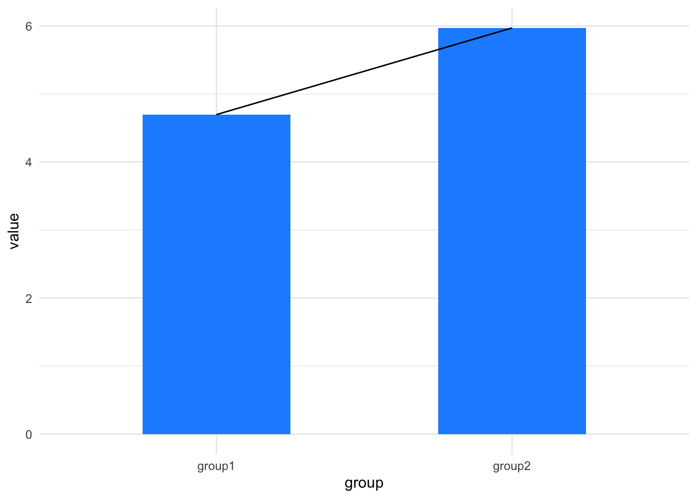

library(itssl)
df <- its_bardata_time()
its_table_time(df)| group1 | group2 |
|---|---|
| 6.357027 | 6.650224 |
| 4.217032 | 5.343997 |
| 4.011094 | 6.603704 |
| 6.459490 | 6.046695 |
| 4.163264 | 5.420880 |
| 6.614712 | 7.056854 |
We all know that doing the same experiment twice will return different results each time. Perhaps not massively different, but definitely not exactly the same. Variation like this can make it hard for us to assert that there are differences between the things we are testing. This is the central issue that statistics seeks to address, in plain English we ask
How can I be reasonably certain that the difference I see is a real one?
the answer to this in statistics is usually the same one - compare it to the situation where there isn’t any difference, if it is an unlikely result there, then perhaps there is a difference. This ‘situation where there isn’t any difference’ is called a Null Model, or perhaps you can think of it as a random model or a default model.
And that’s the whole of the logic to a statistical test - we simply make an assumption about what a Null Model of no difference is, then use it to see how likely a given difference would be in that model.
Just because the overall answer is usually the same one, that doesn’t mean that there is only one way of generating a Null Model. Far from it! The selection of the Null Model is one of the thorniest issues in statistics and is one of the reasons most often cited for selecting one type of test over another. Often the Null Model will be the Normal Distribution, which you may have heard of (and yes, it’s called the Normal because it’s the one we normally use) other common ones are the Binomial or Poisson, the exponential, the Gamma and the \(t\) and \(\chi-squared\). Thankfully, the tool we are going to learn will be able to use all of these appropriately. For most of this book our focus will be on Normal Null Models.
A Null Model will always have some way of incorporating variability, if you ask for a likelihood of a given difference, there will always be an effect of variability on the likelihood, usually the as variability increases the likelihood that there is a difference decreases.
Either way, for our purposes the basic idea is that we look inside the null model and see how likely it would be. Usually we ask a very specific question of a Null Model
What is the likelihood of getting the difference we observed if the true difference were 0, given the observed amount of variablility?
The likelihood of the difference under the Null Model is expressed as a very misunderstood and abused quantity - the \(p\)-value.
A lot of researchers get the impression that \(t\)-tests, ANOVAs and other hypothesis tests tell you whether something is significant with probability \(p\). This is quite a misinterpretation. They do no such thing. More accurately but still rather informally and in general \(p\) can be taken as follows
\(p\) should be thought of as the frequency of seeing a difference of the size observed in the Null Model
Remembering that the Null Model is the default situation where the difference is 0 then this is resolutely not the same as saying they are definitely different. Just that they’re not likely to be the same. The \(p\) in \(p\) value is usually taken to mean ‘probability’, but if it stands for anything it should be ‘probably not the same’.
Hypothesis testing like this has been criticized for being weak inference, and not without reason. All this means is that we need to be awake to the limitations of our methods.
With this idea of using a Null Model as a reference to see whether our difference is likely or not we can start to think about defining a difference.
One way of examining a difference is to think about the slopes of straight lines. It isn’t immediately obvious how this works, intuitively we might just want to think about numbers, so let’s work through a quick example. Let’s consider these data
library(itssl)
df <- its_bardata_time()
its_table_time(df)| group1 | group2 |
|---|---|
| 6.357027 | 6.650224 |
| 4.217032 | 5.343997 |
| 4.011094 | 6.603704 |
| 6.459490 | 6.046695 |
| 4.163264 | 5.420880 |
| 6.614712 | 7.056854 |
In the beginning of our scientific education we might’ve plotted them as barcharts, by taking the mean, like this.
its_barplot_time(df)
Imagine drawing a line between the tops of the bars, like this:
its_barplot_time(df, join_tops = TRUE)
The slope of that line tells us about the difference in the means. If it is flat there’s no difference, if it isn’t flat maybe there is a difference.

Now we have a conceptual tool for thinking about differences (like differences in means of samples) as a slope between the means from one group to another. And that is the logic we will be following in this little book. All we will do is learn to look for a slope of a line. We’ll look at using a statistical tool called a linear model, which tries to create a straight line that matches the data, so it contains the equation of a straight line but elaborates on the equation alone by providing measures of believability about the slope and other things. The technique we will learn will give us a framework for thinking about performing hypothesis testing in all sorts of comparisons including \(t\)-tests, ANOVA, etc. and with elaborations we’ll be able to see how to use the same framework for the other class of tests that we often use, the non-parametric tests.
Complete the interactive quiz online https://tsl-bioinformatics.shinyapps.io/linear_models_background/